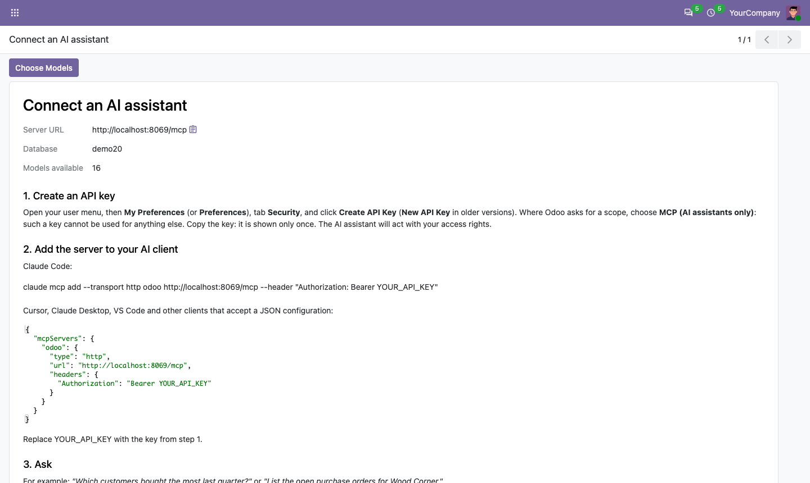
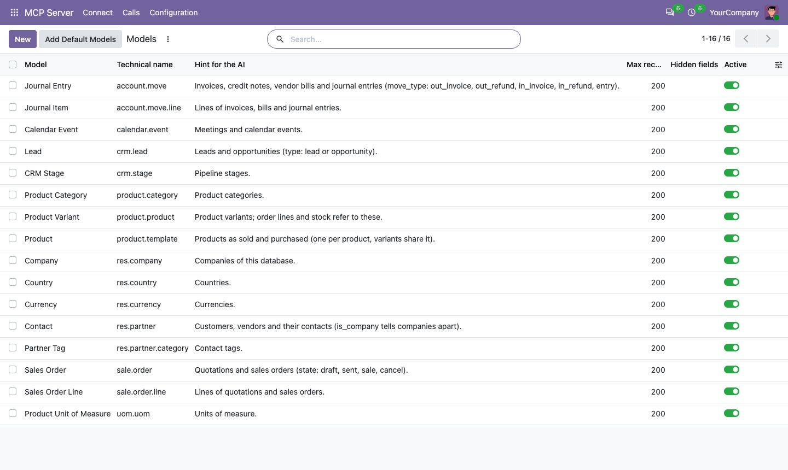
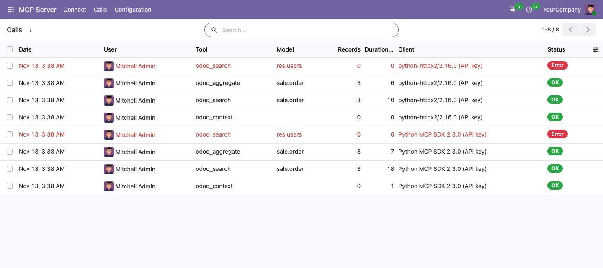
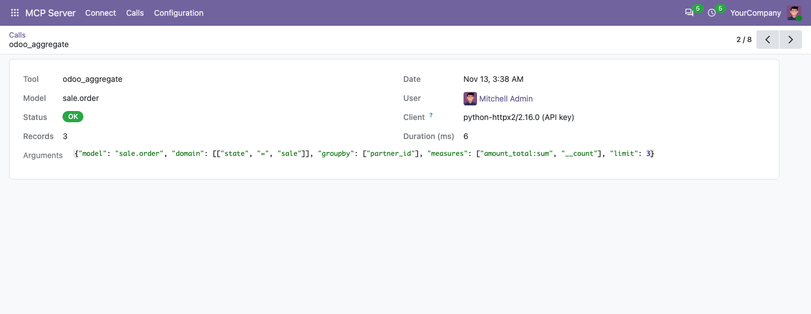
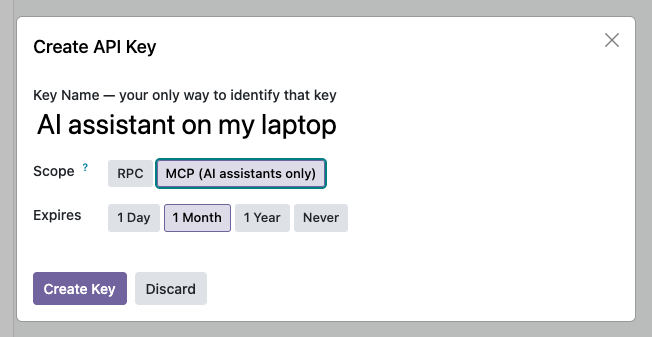

Ask your AI assistant about your Odoo data. Claude, ChatGPT, Cursor, VS Code and any client that speaks the Model Context Protocol can search, read and total your records, with your own access rights.
Free Community and Enterprise Read-only MCP 2026-07-28 and 2025 versions
Example, on the Odoo demo database
You: Which confirmed sales orders are the largest?
The assistant calls odoo_search on Sales Order, state = sale, sorted by total.
Assistant: The three largest are S00020 for Joel Willis (3,389.63), then S00004 (2,240.00) and S00007 (1,706.00), both for Gemini Furniture.
Current user and date, list of models, model fields, search, read by id, count, and totals by group (for example revenue per customer per month). The assistant gets the total number of matches and pages through results.
The assistant signs in with a personal API key and sees exactly what that user sees in Odoo: record rules, multi-company and field groups all apply. Nothing can be created, changed or deleted.
An administrator chooses the models, adds a short hint for each, and can hide extra fields. Passwords, tokens, keys, signatures and files are never shown. Users, settings and technical tables cannot be added.
On Odoo 20 the app adds an "MCP (AI assistants only)" scope to API keys: such a key cannot be used for any other API. Earlier versions use your regular API keys.
Who called which tool, on which model, with which filters, how many records came back, how long it took, and any error. Users see their own calls; administrators see all.
Implements MCP 2026-07-28 (stateless, server/discover) and still answers clients that use the 2025 handshake. Tested with the official MCP Python SDK in both modes.
The Connect page gives the server URL and ready-to-paste configuration:

Choose the models, with a hint for the assistant:

Every call, including refused ones:

The details of one call:

An API key limited to AI assistants (Odoo 20):

The server URL is https://your-odoo-domain/mcp. It must reach the right database directly:
either the server hosts one database, or a database filter maps the hostname to it (Odoo 19 and 20 clients may also send an
X-Odoo-Database header).
Where does my data go?
The app only answers requests from the AI client you connect, with the key you give it. The data in those answers is
sent to that client and, through it, to the AI provider you use. Nothing is sent anywhere else and the app makes no
outside connection. Disable a model, or revoke the key, to stop it.
Can the assistant change data?
Not with this app: every tool is read-only.
Does it work with Claude.ai or ChatGPT in the browser?
Those web connectors sign in with OAuth rather than an API key: add the "MCP Server Pro" app for that. Desktop and
command-line clients (Claude Code, Claude Desktop, Cursor, VS Code and others) work with an API key and this app alone.
Odoo 20 Enterprise has its own MCP. Why this app?
This app works on Community and on Odoo 18, 19 and 20, does not use Odoo AI credits, lets you choose the exposed models,
and logs every call.
Can I use it on Odoo Online?
No. Odoo does not allow third-party apps with Python code on Odoo Online. It works on Odoo.sh and on your own server.
Questions and bug reports: odoo@calderkit.com. We answer in writing within two business days.
Made by Calderkit. Released under the LGPL-3 license.